Bill of Materials
- 6 × 11¾ inch pipes
- 4 × 17 inch pipes
- 8 × 7½ inch pipes
- 6 × ¼ inch × 2 inch machine screws
- 4 × ¼ inch × 1 inch machine screws
- 8 × ¼ inch wingnuts
- ¼ inch wooden board
Parts Key
| Label | Part | Photo |
|---|---|---|
| A | 3-way connector | 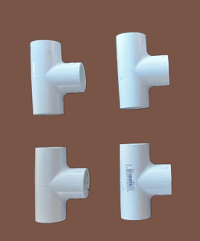 |
| B | 4-way elbow connector | 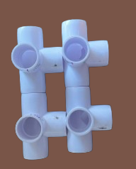 |
| C | 3-way elbow connector | 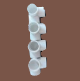 |
| D | 11 inch PVC pipes | 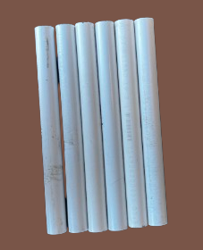 |
| E | 7.5 inch PVC pipes | 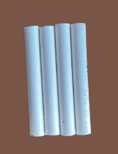 |
| F | 17 inch PVC pipes | 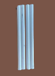 |
| G | Sifting trays | 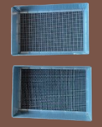 |
| H | ¼ × 2 inch machine screw | 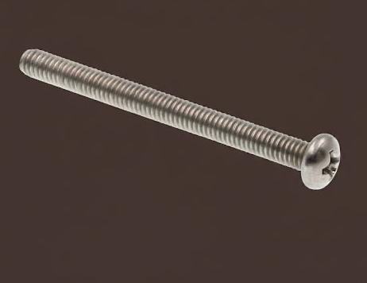 |
| I | ¼ × 1 inch machine screw | 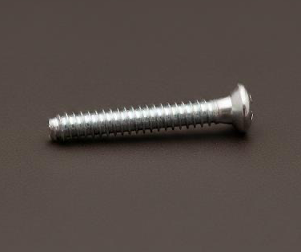 |
| J | ¼ inch wingnut | 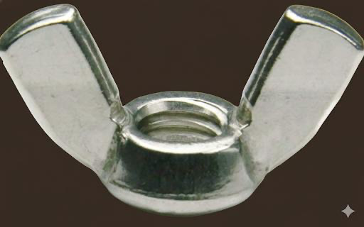 |
Assembly Steps
Step 1 Building the Top Frame
Attach two 11-inch PVC pipes (D) and two 17-inch PVC pipes (F) by using four 3-way elbow connectors (C). Lightly tap the connectors with a hammer to tighten the frame.
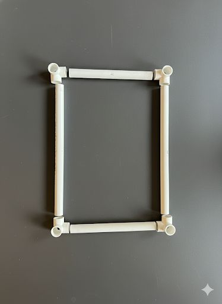
Step 2 Building the Middle Frame
Attach two 11-inch PVC pipes (D) and two 17-inch PVC pipes (F) by using four 4-way elbow connectors (B). Lightly tap the connectors with a hammer to tighten the frame.
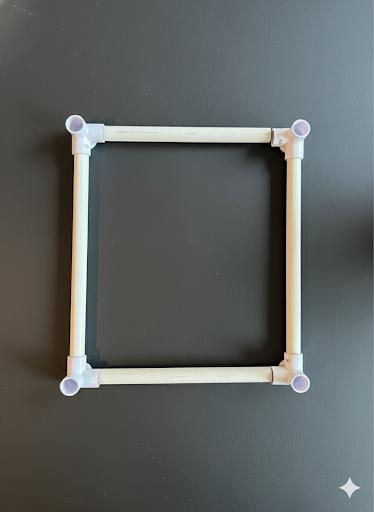
Step 3 Connecting the Frames
Connect the top frame and the middle frame using four 7.5-inch connectors (E). Lightly tap the connectors with a hammer to tighten the frame.
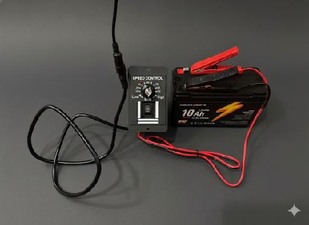
Step 4 Attaching the Legs
Attach four more 7.5" PVC pipes (E) to the other side of the 4-way elbow connectors (B).
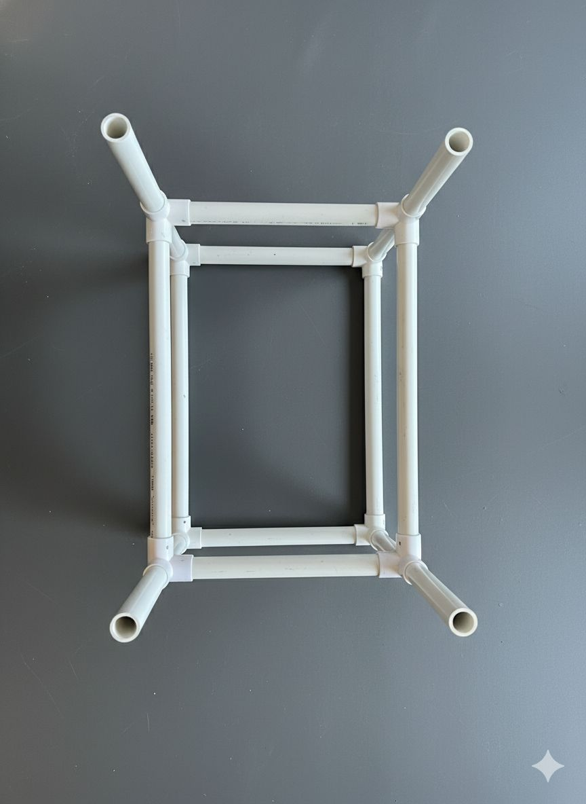
Step 5 Build the Leg Bases
Build 2 leg bases by attaching two 3-way connectors (A) to 11-inch pipes (D).
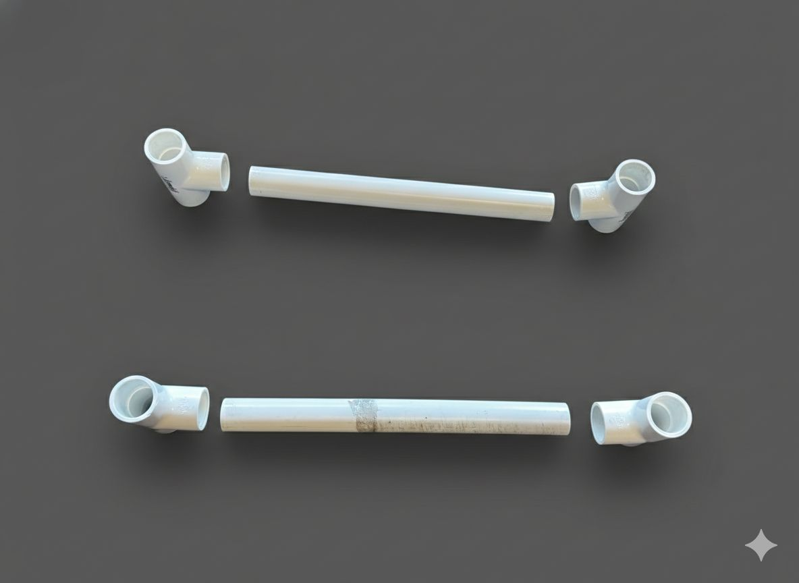
Step 6 Attaching the Leg Bases
Attach the leg bases to the legs of the sifter.
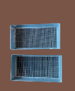
Step 7 Cutting the Wood
Cut the wooden plank to 9 × 12 inch size.
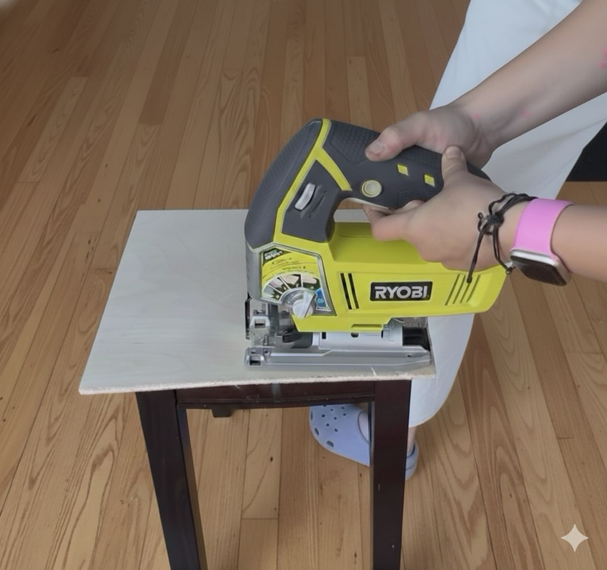
Step 8 Attach the Trays to the Frame
Insert the tray with ⅜ in mesh size (G) on the top, and the tray with the ¼ in mesh size (G) on the bottom. Mark the middle of the 11-inch PVC pipe (D) and tray. Drill one hole in each pipe using a ¼ inch drill bit through the tray.
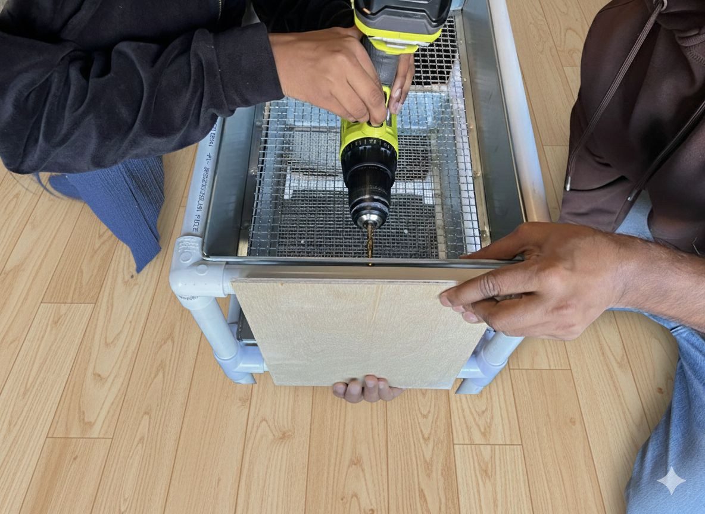
Step 9 Attaching the Motor
Place the motor in the center of the board and mark the four points for the motor attachment. Drill holes using a ¼ inch drill bit at the four points. Attach the motor to the board with the 1-inch screws (I) and wingnuts (J).
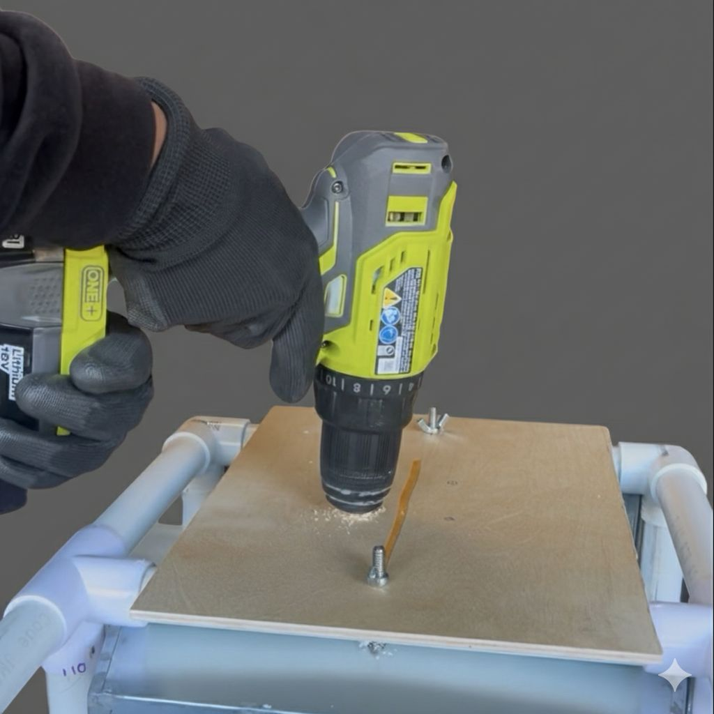
Step 10 Attaching the Board to the Sifter
Using 2-inch screws (H), attach the board to the PVC pipes and frames and tighten with wingnuts.
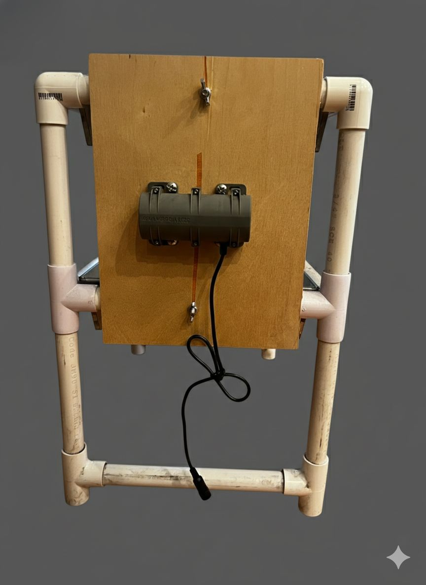
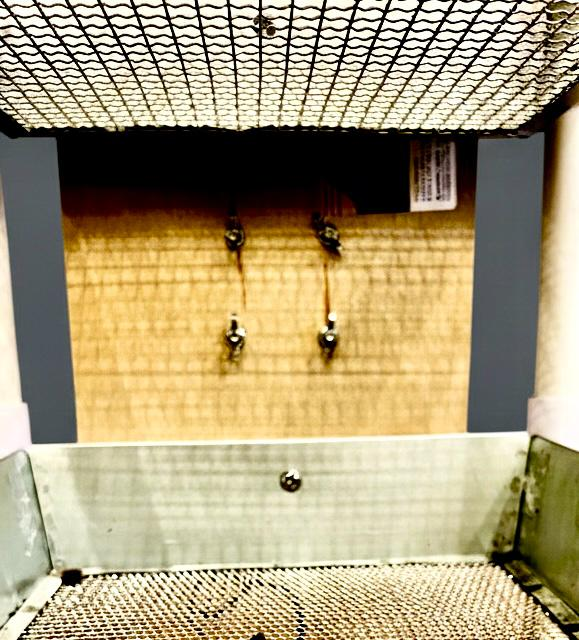
Wiring
Step 11 Wire the Regulator
Attach the wires coming from the battery to the speed regulator’s power terminal. Then attach the wires for the motor to the motor terminal on the regulator.
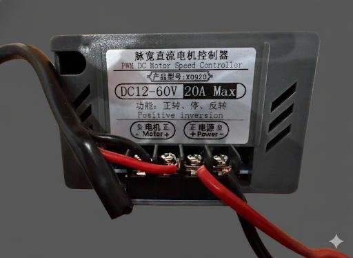
Step 12 Connect the Battery
Connect the battery to the regulator on the input side. Ensure the positive (red wire) and the negative (black wire) are connected correctly. Similarly, connect the regulator to the motor.
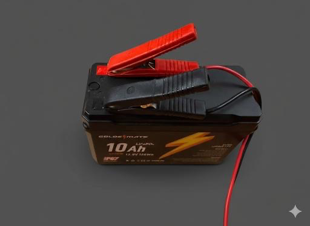
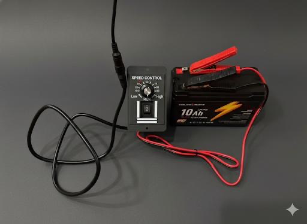